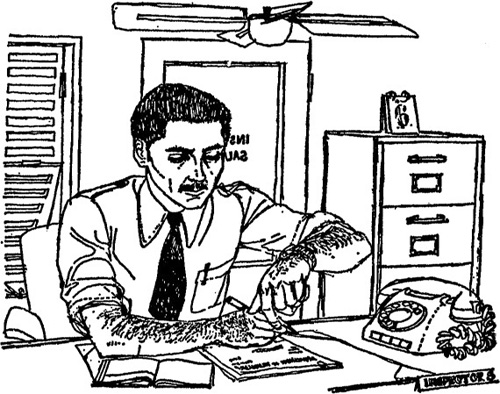

1
Listen to Part 1:

Salahadin lo lắng
Salahadin ngồi cởi áo khoác trong phòng làm việc. Tháng Năm ở Cairo rất nóng. Salahadin đứng dậy và bật quạt. Anh ta là một thanh niên mới 28 tuổi. Anh ta không cao lắm và khá gầy. Mái tóc đen của anh ta được cắt rất ngắn.
Văn phòng của Salahadin nằm ở trung tâm Cairo. Nó nằm trong một tòa nhà lớn sau Khách sạn Nile. Đây là một văn phòng nhỏ và cái tên Salahadin không được đề trên cửa. Không nhiều người biết rằng anh ta là một thám tử. Nhưng anh ta không phải là một thám tử bình thường. Thanh tra Salahadin bảo vệ mọi đồ cổ của Ai Cập.

Salahadin đang đợi một nhà khảo cổ học tên là Pearson. Pearson đã ở Ai Cập sáu tháng. Anh ta làm việc ở một thung lũng ở miền nam Ai Cập. Pearson đang tìm kiếm đồ cổ. Anh ta đã trở lại Cairo vài ngày trước và sẽ sớm rời khỏi Ai Cập.
Nhưng anh ta đã không đến văn phòng của Salahadin. Mọi nhà khảo cổ học đều phải gặp Salahadin trước khi rời khỏi Ai Cập. Salahadin lo lắng. Pearson vẫn chưa đến.
Salahadin nhấc điện thoại và bấm số khách sạn của Pearson.
Một giọng nói vang lên, "Khách sạn Nile. Tôi có thể giúp gì không?"
Salahadin nói, "Tôi có thể nói chuyện với người quản lý không?"
Listen to Part 2:
Salahadin chờ đợi trong giây lát. Rồi anh ta nghe thấy tiếng của người quản lý.
Người quản lý nói, "Tôi có thể giúp gì không?"
Salahadin trả lời, "Có. Tên tôi là Salahadin El Nur. Tôi là thanh tra cảnh sát. Tôi muốn nói chuyện với anh Pearson."
Người quản lý hỏi, "Anh có muốn nói đến anh Pearson, nhà khảo cổ học không?"
Salahadin trả lời, "Phải."
Người quản lý nói, "Xin lỗi anh. Anh không thể nói chuyện với anh Pearson được."
Salahadin ngạc nhiên, "Ồ, tại sao vậy?"
Người quản lý trả lời, "Anh Pearson đã chết. Sáng nay, người ta phát hiện ra anh ta chết trong phòng mình. Anh Pearson đã bị giết."
Mục lục
- Bìa
- Trang chủ
- Trang bản quyền
- Mục lục
- Lời giới thiệu
- 1 Salahadin lo lắng
- 2 Hộp mất tích
- 3 Tài xế taxi
- 4 Thuyền đến Beirut
- 5 Mèo đen
- 6 Ở Beirut
- 7 Đường đến Ba'albek
- 8 Câu chuyện của Borkman
- 9 Từ Beirut đến Athens
- 10 Salahadin tìm thấy Peterson
- 11 Salahadin tìm thấy Mèo đen
- 12 Cái chết trên Syria
- 13 Không làm phiền
- 14 Trở về Cairo
- 15 Kết thúc
- Điểm để hiểu